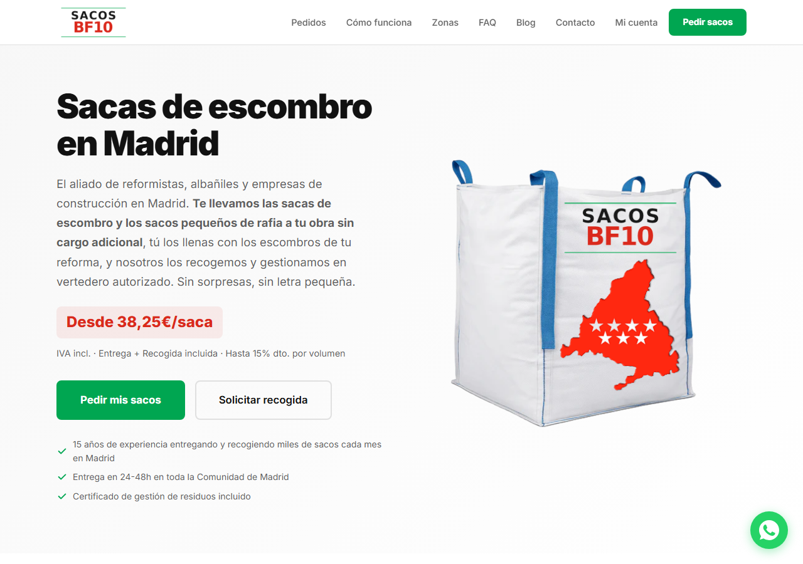
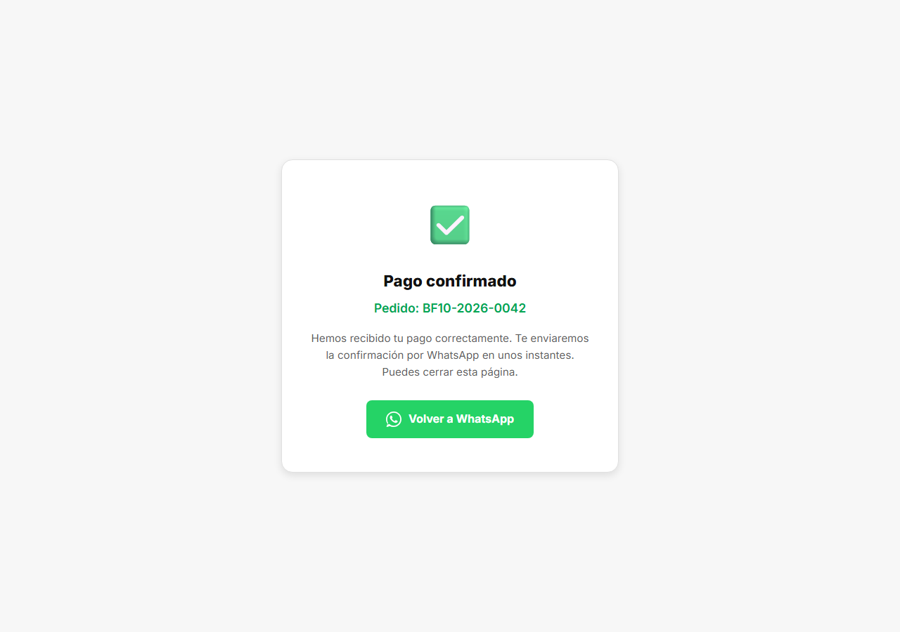
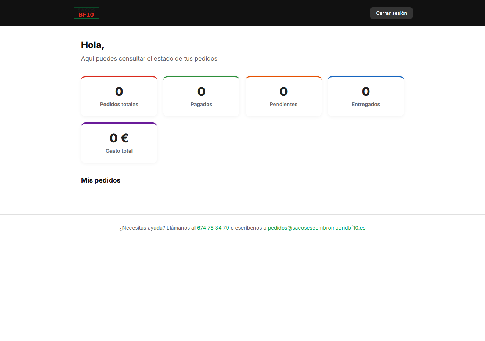
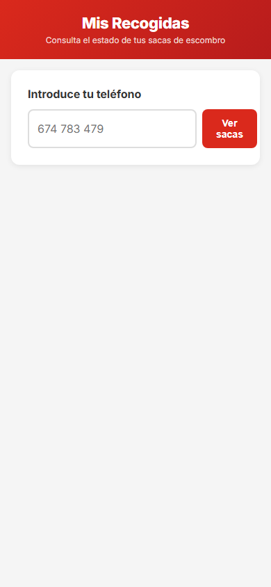
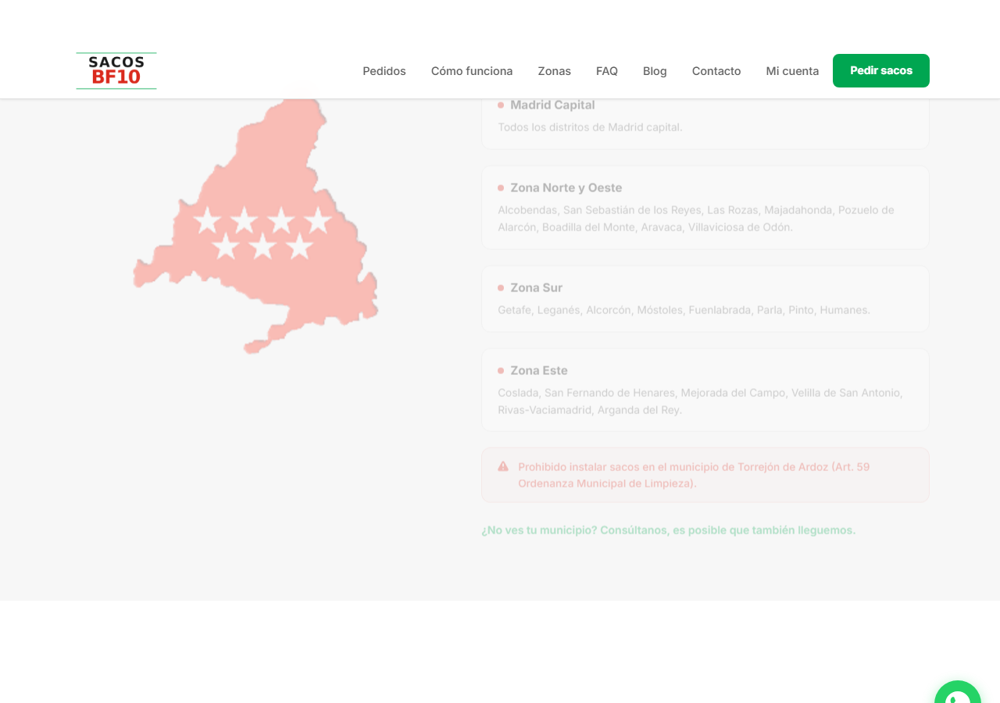

Guia para pedir sacas de escombro, pagar y consultar tus pedidos
BF10 Sacos de Escombro MadridDesde la web puedes ver los packs disponibles, precios, zonas de servicio y hacer tu pedido directamente.

Elige el pack que necesites desde la web o por WhatsApp
Entrega en 24-48 horas en tu direccion
Llena las sacas con escombro de tu obra o reforma
Avisanos y pasamos a recogerlas. Gestion de residuos incluida
| Campo | Descripcion |
|---|---|
| Nombre | Tu nombre completo o razon social |
| Para enviarte la confirmacion del pedido | |
| Telefono | Para coordinacion de la entrega |
| Direccion | Calle, numero, piso/puerta donde entregar las sacas |
| Codigo Postal | CP de la zona de entrega |
| Necesito factura | Marca esta casilla si necesitas factura con IVA |
| NIF/CIF | Solo si solicitas factura |

Desde "Mi cuenta" en el menu de la web puedes ver el resumen de todos tus pedidos.

| Indicador | Que muestra |
|---|---|
| Pedidos totales | Numero total de pedidos realizados |
| Pagados | Pedidos con pago confirmado |
| Pendientes | Pedidos pendientes de pago o entrega |
| Entregados | Pedidos ya entregados en tu direccion |
| Gasto total | Total acumulado de todos tus pedidos |
Debajo veras la lista de Mis pedidos con el detalle de cada uno.
Desde el movil, accede a "Mis Recogidas". Introduce tu numero de telefono y pulsa "Ver sacas".

Tus recogidas se organizan en tres pestanas:
| Pestana | Contenido |
|---|---|
| Pendientes | Sacas registradas que aun no se han recogido |
| En ruta | Sacas asignadas a un conductor en camino |
| Completadas | Sacas ya recogidas |

| Zona | Cobertura |
|---|---|
| Madrid Capital | Todos los distritos |
| Zona Norte y Oeste | Alcobendas, S.S. de los Reyes, Las Rozas, Majadahonda, Pozuelo, Boadilla, Aravaca |
| Zona Sur | Getafe, Leganes, Alcorcon, Mostoles, Fuenlabrada, Parla, Pinto, Humanes |
| Zona Este | Coslada, S. Fernando de Henares, Mejorada, Velilla, Rivas, Arganda |